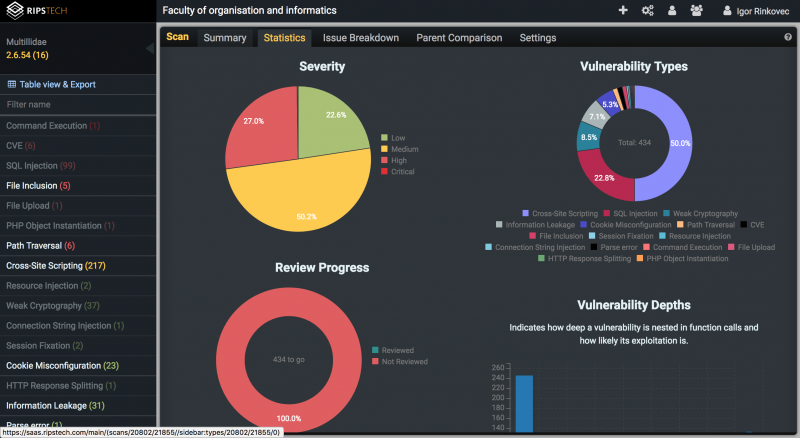
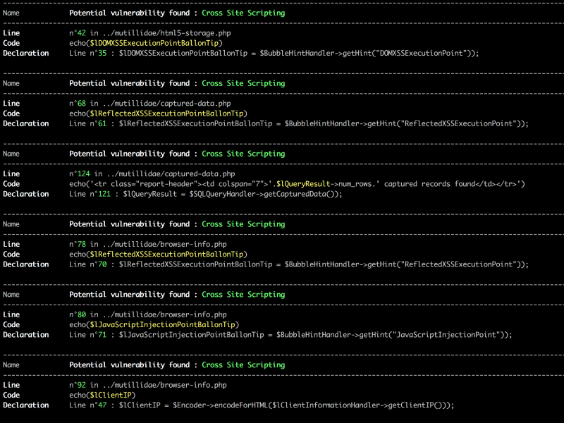

PHP Security Static Analysis
Temu rezervirao: Igor Rinkovec
Sadržaj |
Uvod u statičku analizu
Statička analiza izvornog koda je poces pronalaska grešaka/nepoželjnih implementacija bez izvršavanja samog programa. Iz te definicije i dolazi ime statička analiza jer se kod ne pokreće kako bi se ona izvršila nego se isključivo čita kao obična tekstualna datoteka. S obzirom na tu činjenicu ovo je vrlo zanimljiv način pronalaska sigurnosnih problema u web aplikaciji zbog vrlo niskog praga intervencije od strane samih razvojnih inženjera da bi se problemi otkrili. S obzirom da je ovaj proces u potpunosti automatiziran, on se također može uključiti i u continuous integration alat kako bi se ove provjere odvijale kod svakog check-ina u sustav za verzioniranje.
Nedostatci
Zbog iznad navedenih razloga ovakvi alati su vrlo zanimljivi sa strane korisnika, no pružaju i velike izazove kod same implementacije istih. Većina izazova proizlazi iz činjenice da je razvoj softwarea kreativna grana u kojoj svaka osoba ima svoj način pisanja koda i rješavanja problema. Ova činjenica uvelike otežava detekciju grešaka u tom svijetu punom varijacija jer je potrebno pokriti sve slučajeve korištenja kako bi bili 100% sigurni da se ta greška nije pojavila. Upravo to je često nemoguće što znači da statička analiza ne može biti pokazatelj da u kodu nema grešaka, no može biti efikasni pokazatelj da greška postoji.
Zbog težine implementacije kvalitetnog sustava statičke analize na tržištu postoji relativno slaba konkurencija. Većina proizvoda je krnja u smislu da ne pokriva neki važan aspekt ili je u obliku komercijalnih alata sa visokom cijenom. Ta visoka cijena otežava pristup ovoj tehnologiji onima kojima je najpotrebnija - manjim poduzećima i projektima koji nemaju politiku code-reviewa ili druge metode pronalaska sigurnosnih grešaka.
Pregled dostupnih rješenja
Ovdje su navedena sva popularnija rješenja za statičku analizu sigurnosnih grešaka u PHP aplikacijama. Tri najpopularnija rješenja koja su bila dostupna za test su odabrana i testirana u sljedećem odlomku.
| Ime | Održavan? | Cijena | Podržane platforme |
|---|---|---|---|
| Eir | Ne | Besplatan | *nix i Windows |
| Garcon | Ne | Besplatan | *nix i Windows |
| Phortress | Ne | Besplatan | *nix i Windows |
| Parse | Da | Besplatan | *nix i Windows |
| CxSAST | Da | $$$ | *nix i Windows |
| Pixy | Da | Besplatan | *nix i Windows |
| RIPS | Da | $190/mjesečno po aplikaciji | *nix i Windows |
| WAP | Ne | Besplatan | *nix i Windows |
| DevBug | Da | Besplatan | *nix i Windows |
| Vulny-Code-Static-Analysis | Da | Besplatan | *nix i Windows |
Evaluacija i usporedba najpopularnija 3 rješenja
RIPS Tech
RIPS je jedini komercijalni alat na iznad navedenoj listi. Sa cijenom od 190 USD mjesečno po aplikaciji koju želite testirati nije mala cijena, no alat po formalnim specifikacijama napisanim na stranicama izgleda kao najrazvijeniji od svih dostupnih. Limitacija od testiranja samo jedne aplikacije se čvrsto primjenjuje što znači da nije moguće sa jednom licencom testirati više aplikacija odjednom. Ukoliko RIPS pronađe veliku razliku u strukturi programskog koda između uploadanih verzija on neće dopustiti testiranje novog uploadanog koda.
Detekcija ranjivosti
RIPS ima stvarno zadivljujuću listu ranjivosti koje je sposoban detektirati. Cijela lista detektiranih ranjivosti dostupna je na službenim [1], no u svrhu kvalitetne usporedbe napravio sam standardiziranu tablicu koja će biti korištena za sva tri rješenja.
| Lista ranjivosti | Pokrivenost |
|---|---|
| OWASP Top 10 2013. | 10/10 |
| Top 10 2017. | 7/10 |
| CWE | 84/714 |
| SANS top 25 | 25/25 |
Korisničko sučelje
RIPS je SaaS (Software as a Service) rješenje te je njegovo korisničko sučelje dostupno isključivo putem browsera ili direktno preko RESTful API-ja. Ovo može dovesti u pitanje sigurnosti samog izvornog koda nakon slanja RIPSu na analizu. Oni tvrde da se kod automatski uništi nakon analize osim djelova koji se prikazuju kao pomoć pri popravku te daju korisniku opciju da ga u potpunosti obriše. No ovim otvaramo pandorinu kutiju o povjerenju prema RIPSu i njihovoj internoj sigurnosti sustava. Kako bi se ovaj rizik mitigirao postoji enterprise self-hosted verzija čiju cijenu ne otkrivaju na samom prodajnom sajtu što bi moglo značiti da nije mala.
Kada uzmemo ovu činjenicu u obzir i prihvatimo navedeni rizik možemo uočiti da je RIPS korisničko sučelje vrlo kvalitetno osmišljeno i implementirano. 
{kind=link}
Nakon analize programskog koda možete provjeriti statistike o samoj analizi koja pokazuje kakve su ranjivosti pronađene po vrsti i opasnosti. Također s lijeve strane su sve ranjivosti razvrstane po kategorijama. Pritiskom na kategorjiu možete provjeriti točan isječak koda i tip ranjivosti koji je pronađen te pronaći detaljne upute kako isti ispraviti.
{kind=link}
Ovdje je primjer jedne detektirane ranjivosti i sučelja koje RIPS pokazuje kada odaberemo tu ranjivost. Možemo istu označiti kao pregledanu kako bi se maknula iz backloga svih ranjivosti koje trebamo proučiti.
Parse
Psecio Parse je alat u relativno ranoj fazi razvoja čiji je cilj upravo statička analiza PHP koda za ranjivostima. Alat je u potpunosti besplatan i open-source te se jednostavno može instalirati i pokrenuti kao composer paket. Takav setup omogućava vrlo jednostavnu integraciju u CI okolinu što osigurava da se alat pokreće kod svake promjene izvornog koda.
Činjenica što je alat open-source i što je pisan na moderan način i lako nadogradljiv je jedina pozitivna strana ovog alata. Kada bi se popravila baza detekcijskih pravila, ovaj alat bi bio odličan dodatak bilo kojem CI okruženju.
Detekcija ranjivosti
Detekcija ranjivosti je najveći nedostatak ovog alata. Naime podržan je samo mali set pravila za detekciju i ta pravila kreiraju jako puno false-positive detekcija. Neka pravila funkcioniraju više kao neki napredniji linter za kvalitetu koda. Na testnom codebaseu je pronašao čak 7025 "ranjivosti".
| Lista ranjivosti | Pokrivenost |
|---|---|
| OWASP Top 10 2013. | 0/10 |
| Top 10 2017. | 0/10 |
| CWE | ??? |
| SANS top 25 | 2/25 |
Korisničko sučelje
Kao što sam ranije naveo Parse je dostupan isključivo preko CLI sučelja. Nakon instalacije sa composer-om potrebno je samo koristiti komandu "psecio-parse <putanja_do_aplikacijskog_koda>". Nakon toga se pokreće proces skeniranja čiji je napredak jasno prikazan u sučelju.
{kind=link}
Nakon uspješnog pokretanja prikazuje se lista svih pronađenih ranjivosti.
{kind=link}
Vulny-Code-Static-Analysis
Vulny-Code-Static-Analysis je alat koji je nastao tek prošle godine no jedan je od open-source alata sa kojim sam imao najbolje rezultate od svih navedenih. Detekcija nije na nekoj naprednoj razini, no barem ne daje toliko false-positivea kao što to radi Parse.
Ogroman problem s ovim alatom je što su detekcijska pravila pisana isključivo u regexu što predstavlja problem na više fronti. Kod nije pregledan, regex može točno detektirati samo jedan mali subset sigurnosnih ranjivosti u programskom kodu te je teško zaštiti pravila od false-positivea.
Detekcija ranjivosti
Detekcija ranjivosti je na najboljoj razini od svih isprobanih open-source alata za statičku analizu - što ne znači da je zadovoljavajuća.
| Lista ranjivosti | Pokrivenost |
|---|---|
| OWASP Top 10 2013. | 6/10 |
| Top 10 2017. | 6/10 |
| CWE | ??? |
| SANS top 25 | 6/25 |
Korisničko sučelje
Parse je dostupan isključivo u CLI sučelju što opet omogućuje jednostavnu integraciju u CI okruženja. Nedostatak ovog pristupa je što nije moguće označiti određene detekcije kao rješene ili neznačajne. Rezultati su prikazani, zajedno s linijama na kojima su ranjivosti nađene no ne pruža nikakve savjete za rješavanje istih. 
{kind=link}
Odabir najboljeg po svim faktorima
Najbolji produkcijski alat
Kao što je i vidljivo iz iznad navedenih analiza, iako je komercijalni i relativno skup alat RIPS po svojim detekcijskim mogućnostima prednjači nad svim drugim alatima dostupnim na tržištu. Njegova cijena predstavlja značajnu barijeru pri korištenju ovog alata - no u projektima gdje je sigurnost na prvom mjestu svakako valja uložiti u ovakvo rješenje.
Uz daleko najbolju detekciju korisničko sučelje koje RIPS pruža omogućava puno više od toga. Omogućava praćenje koje ranjivosti su rješene ili false-positive, vrši statistiku ranjivosti koja može biti korisna kao izvještaj za menadžment te pruža integraciju sa svim velikim CI okruženjima te development alatima.
Najviše potencijala u budućnosti
Iako je Parseova detekcija trenutno jedna od gorih od svih testiranih alata, njegov kvalitetan codebase i modularan način pisanja detekcijskih pravila daje ovom alatu veliku prednost. Uz malo truda moguće je razviti kvalitetnu bazu pravila koja će učiniti ovaj alat puno moćnijim. Parse također koristi pravi parser izvornog koda i ne oslanja se na obična regex pravila za detekciju.
Ovo je alat kojem ću u budućnosti sigurno doprinjeti te koristiti na nekomercijalnim i manjim komercijalnim projektima kao dodatnu razinu zaštite.